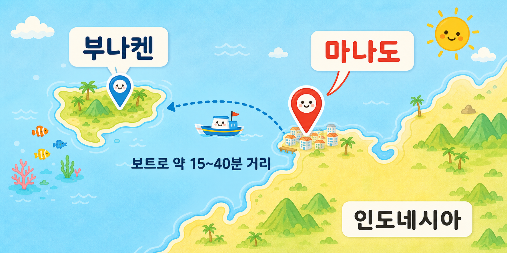
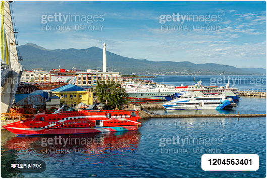
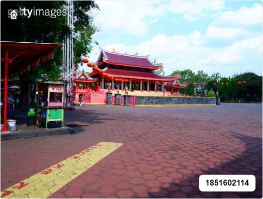
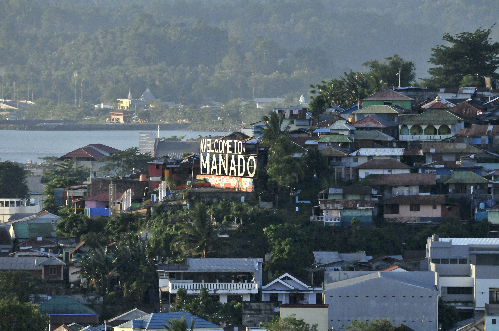
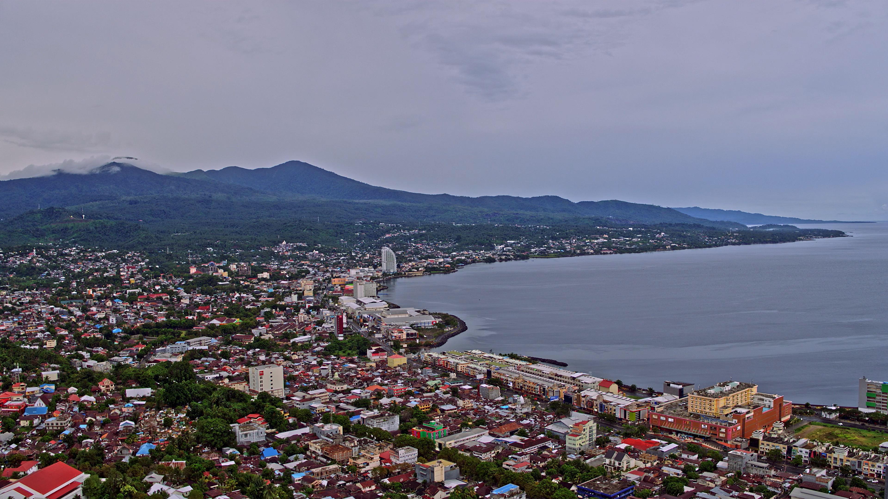

마나도/부나켄
마나도는 인도네시아 북술라웨시를 대표하는 해안 도시입니다. 부나켄은 마나도 앞바다에 자리한 해양 국립공원입니다. 도시의 로컬한 분위기와 맑은 바다, 산호초를 함께 만날 수 있는 여행지입니다.

마나도
마나도는 바다를 따라 도시가 펼쳐진 인도네시아 북술라웨시의 대표 해안 여행지입니다. 마나도만과 항구, 수카르노 브리지, 크라이스트 블레싱, 반힌끼옹 사원 등을 둘러보며 바다 풍경과 로컬한 분위기를 함께 느낄 수 있습니다.

마나도 관광 포인트






부나켄
부나켄 국립해양공원은 세계적인 해양 생물 다양성으로 유명한 마나도 앞바다의 대표 여행지입니다. 산호초와 다양한 해양 생물이 서식해 다이빙과 스노클링 명소로 인기가 높습니다. 바다거북, 돌고래류, 리프샤크, 나폴레옹피시, 바라쿠다 등 다채로운 바닷속 생태계를 만날 수 있습니다. 마나도에서 가까워 일일 스노클링 투어로 즐기기에도 좋습니다.

부나켄 사진 모음